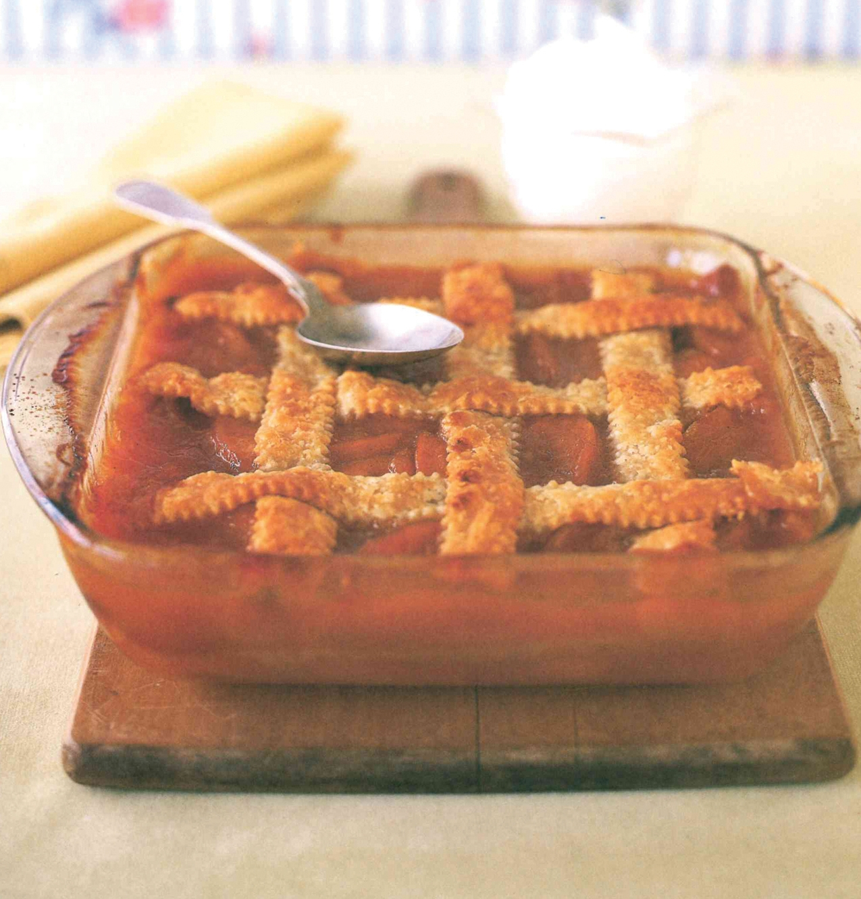

Old Fashioned Peach Cobbler

Decription
This old-fashioned peach cobbler recipe reminds me of the yummy
dessert I ate as a young boy at the Winona Peach Festical. No shortcuts
here. Fresh peaches and homemade crust are worth every minute.
Absolutely delicious served warm with vanilla ice cream. Never any
leftovers with this dessert!
Prep: 30 mins
Cook: 1 hr 10 mins
Additional: 30 mins
Total: 2 hrs 10 mins
Servings: 18
Yield: 1 9x13-inch dish
Ingredients
Crust
- 2 ½ cups all-purpose flour
- 4 tablespoons white sugar, divided
- 1 teaspoon salt
- 1 cup shortening
- 1 large egg
- ¼ cup cold water
- 1 tablespoon butter, melted
Filling
- 3 pounds fresh peaches - peeled, pitted, and sliced
- ¾ cup orange juice
- ¼ cup lemon juice
- ½ cup butter
- 2 cups white sugar
- 1 tablespoon cornstarch
- 1 teaspoon ground cinnamon
- ½ teaspoon ground nutmeg
Directions
- Make crust: Sift together flour, 3 tablespoons sugar, and salt in
a medium bowl. Work in shortening with a pastry blender until
mixture resembles coarse crumbs. Whisk together egg and cold water
in a small bowl. Sprinkle over flour mixture; work with hands to
form dough into a ball. Wrap with plastic wrap and chill in the
refrigerator for 30 minutes.
- Preheat the oven to 350 degrees F (175 degrees C).
- Roll out 1/2 of the chilled dough to 1/8-inch thickness. Place in
a 9x13-inch baking dish, covering the bottom and halfway up the
sides.
- Bake in the preheated oven until golden brown, about 20 minutes.
- Make filling: Mix peaches, orange juice, and lemon juice in a large
saucepan. Add butter and cook over medium-low heat until butter is
melted. Stir together sugar, cornstarch, cinnamon, and nutmeg in a
bowl; mix into peach mixture until combined. Pour into baked crust.
- Roll remaining dough to 1/4-inch thickness. Cut into 1/2-inch-wide
strips. Weave strips into a lattice over peaches. Sprinkle with 1
tablespoon sugar, then drizzle with melted butter.
- Bake in the preheated oven until top crust is golden brown, 35 to 40 minutes.
Nutrician Facts
Per Serving:
- 544 calories
- Protein 4.5g
- Carbohydrates 63.6g
- Fat 31.1g
- Cholesterol 87.3mg
- Sodium 425.5mg